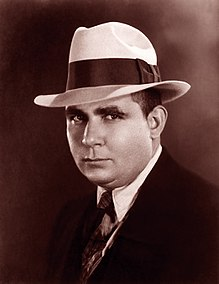
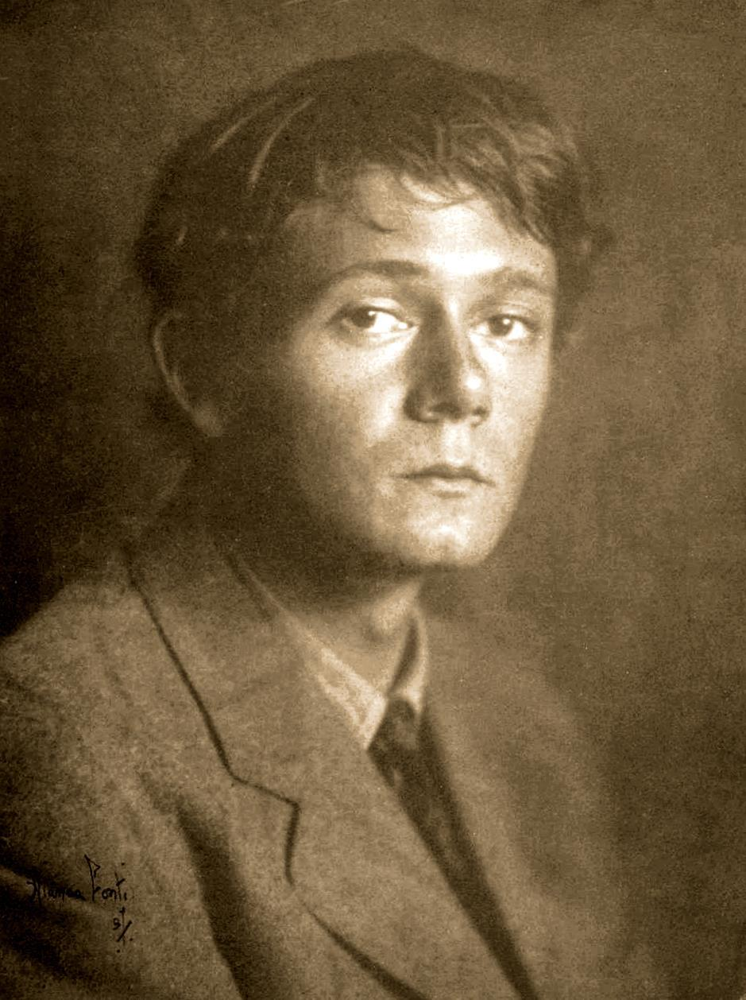
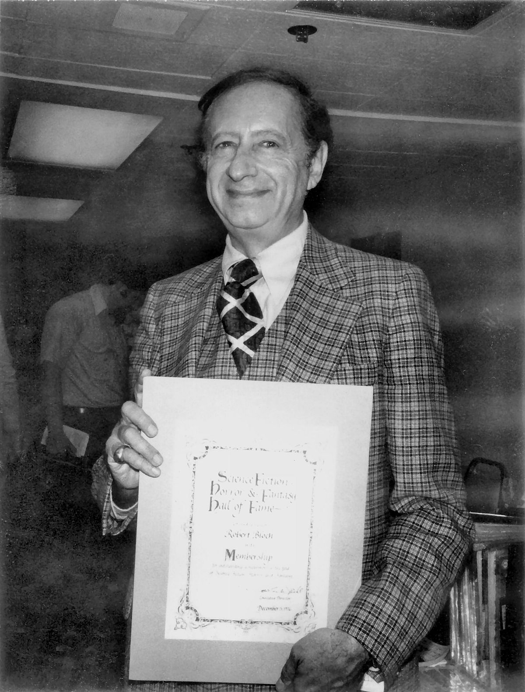

The horror genre is one of those things that have had a definite change over history, from the old tales of Dracula, to the works of Stephen King, to the short horror stories found online, to the new horror films and books of today and so forth. Though there was one man who kickstarted a whole new genre of horror fiction, one that takes the "fear of the unknown" and expand upon that phobia to the extreme. Howard Phillips Lovecraft was a paranoid man who, while starting life in a more lucky household, did not have a nice downbringing, but this isn't a website about Lovecraft himself, but rather, his works and influence, as well as others that created works similar to Lovecraft.

"The world is indeed comic, but the joke is on mankind" - H.P Lovecraft
In life, despite being a paranoid man who dislikes everything outside his hometown of Providence, Rhode Island, had somehow made friends and peers. People who had not only enjoyed his works, but also wanted to contribute to the growing "Cthulhu Mythos." Howard kept contact with these people through mail, and in those mails he and the others wrote about their ideas and even gave pointers for each other. There were more prominent works that came from people who were friends with Howard.
| Prominent Figures | Work(s) | Image |
| Robert E. Howard |
|
 |
| Clark Ashton Smith |
|
 |
| Robert Bloch |  |